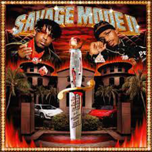
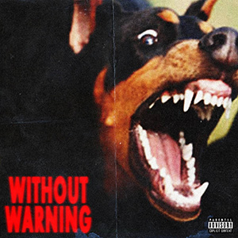

Metro Boomin
Infos
Leben
Metro boomin, auch genannt Leland Tyler Wayne ist einer der grössten Muiskproduzenten unserer Zeit.
Grosse Projekte
 
Awards
Grammy
Billboard Charts
BET best producers of the world
Billboard best Producer of the year
Multi Platin
Meine Lieblingssongs
Superhero ft.Future & Chris Brown
10 freaky Girl ft.21 Savage
Runnin ft.21 Savage
Metro Spider ft.Young Thug